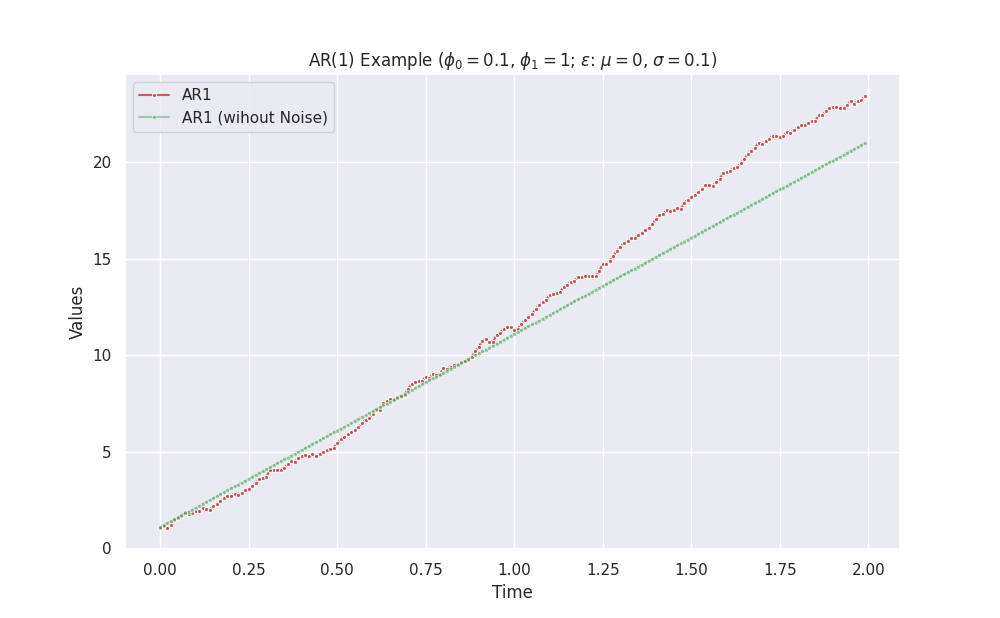

AR¶
Autoregressive (AR) models are simple model to model time series. A general AR(p) model is described by the following process:
AR(1)¶
A first order AR model, aka AR(1), is as simple as
By staring at this equation, we can build up our intuitions.
| \(\phi_0\) | \(\phi_1\) | \(\epsilon\) | Behavior |
|---|---|---|---|
| - | \(0\) | - | constant + noise |
| \(0\) | \(1\) | - | constant + noise |
| \(0\) | \(\phi_1>1\) or \(0\le\phi_1 \lt 1\) | - | exponential + noise |
Exponential Behavior doesn't Always Approach Positive Inifinity
For example, the combination \(\phi_0=0\) and \(\phi_1>1\) without noise leads to exponential growth if the initial series value is positive. However, it approaches negative infinity if the initial series is negative.


import copy
from dataclasses import dataclass
from typing import Dict, Iterator
import matplotlib.pyplot as plt
import numpy as np
import pandas as pd
import seaborn as sns; sns.set()
class GaussianEpsilon:
"""Gaussian noise
:param mu: mean value of the noise
:param std: standard deviation of the noise
"""
def __init__(self, mu, std, seed=None):
self.mu = mu
self.std = std
self.rng = np.random.default_rng(seed=seed)
def __next__(self):
return self.rng.normal(self.mu, self.std)
class ZeroEpsilon:
"""Constant noise
:param epsilon: the constant value to be returned
"""
def __init__(self, epsilon=0):
self.epsilon = epsilon
def __next__(self):
return self.epsilon
@dataclass(frozen=True)
class ARModelParams:
"""Parameters of our AR model,
$$s(t+1) = \phi_0 + \phi_1 s(t) + \epsilon.$$
:param delta_t: step size of time in each iteration
:param phi0: pho_0 in the AR model
:param phi1: pho_1 in the AR model
:param epsilon: noise iterator, e.g., Gaussian noise
:param initial_state: a dictionary of the initial state, e.g., `{"s": 1}`
"""
delta_t: float
phi0: float
phi1: float
epsilon: Iterator
initial_state: Dict[str, float]
class AR1Stepper:
"""Stepper that calculates the next step in time in an AR model
:param model_params: parameters for the AR model
"""
def __init__(self, model_params):
self.model_params = model_params
self.current_state = copy.deepcopy(self.model_params.initial_state)
def __iter__(self):
return self
def __next__(self):
phi0 = self.model_params.phi0
phi1 = self.model_params.phi1
epsilon = next(self.model_params.epsilon)
next_s = (
self.model_params.phi0
+ self.model_params.phi1 * self.current_state["s"]
+ epsilon
)
self.current_state = {"s": next_s}
return copy.deepcopy(self.current_state)
def visualize_vr1(delta_t, phi0, phi1, length=200, savefig=False):
mu = 0
std = 0.1
geps = GaussianEpsilon(mu=mu, std=std)
zeps = ZeroEpsilon()
initial_state = {"s": -1}
ar1_params = ARModelParams(
delta_t=delta_t, phi0=phi0, phi1=phi1, epsilon=geps, initial_state=initial_state
)
ar1_params_zero_noise = ARModelParams(
delta_t=delta_t, phi0=phi0, phi1=phi1, epsilon=zeps, initial_state=initial_state
)
ar1_stepper = AR1Stepper(model_params=ar1_params)
ar1_stepper_no_noise = AR1Stepper(model_params=ar1_params_zero_noise)
history = []
history_zero_noise = []
for l in range(length):
history.append(next(ar1_stepper))
history_zero_noise.append(next(ar1_stepper_no_noise))
df = pd.DataFrame(history)
df_zero_noise = pd.DataFrame(history_zero_noise)
fig, ax = plt.subplots(figsize=(10, 6.18))
sns.lineplot(
x=np.linspace(0, length - 1, length) * delta_t,
y=df.s,
ax=ax,
marker=".",
label="AR1",
color="r",
alpha=0.9,
)
sns.lineplot(
x=np.linspace(0, length - 1, length) * delta_t,
y=df_zero_noise.s,
ax=ax,
marker=".",
label="AR1 (wihout Noise)",
color="g",
alpha=0.5,
)
ax.set_title(
f"AR(1) Example ($\phi_0={phi0}$, $\phi_1={phi1}$; $\epsilon$: $\mu={mu}$, $\sigma={std}$; $s(0)={initial_state['s']}$)"
)
ax.set_xlabel("Time")
ax.set_ylabel("Values")
if savefig:
plt.savefig(
f"/work/timeseries-dgp-ar-var/exports/ar1-phi0-{phi0}-phi1-{phi1}-std-{std}-init-{initial_state['s']}.png"
)
Call the function visualize_vr1 to make some plots.
visualize_vr1(delta_t = 0.01, phi0 = 0, phi1 = 1.1, length = 200, savefig=True)
-
Kumar A. Autoregressive (AR) models with Python examples. In: Data Analytics [Internet]. 25 Apr 2022 [cited 11 Aug 2022]. Available: https://vitalflux.com/autoregressive-ar-models-with-python-examples/ ↩